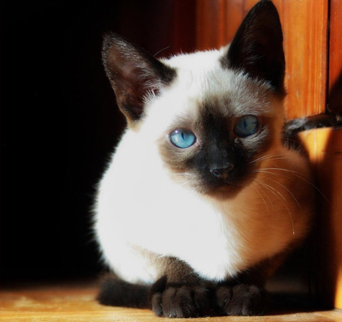

Тайские кошки
Первые упоминания о моей подруге восходят к 14-15 векам. Её родина — Тайланд. Здесь был создан рукописный сборник — «Книга поэм о кошках». Именно в нём и было найдено первое изображение светлошерстной красавицы с тёмными отметинами на лапах, хвосте и морде. Эта кошка, похожая на нынешнюю тайскую, была описана под названием Вичьен Мае.
Вокруг предков моей знакомой царила поистине таинственная, магическая аура: считалось, что тайские кошки очищают жилище от злых духов и защищают его обитателей от болезней. Также кошки этой породы охраняли королевские дворцы и богатейшие библиотеки от крыс и мышей. Да-да, несмотря на внешнюю хрупкость и грацию, моя приятельница весьма бесстрашно несла свою службу.
Очень долгое время тайскую и сиамскую кошек не отличали друг от друга. По этой причине у тайки появилось второе, довольно странное название — «яблокоголовая сиамка». Впрочем, уже в 1990 году в Германии порода тайской кошки была официально признана и получила свой стандарт. Всё как положено.
Описание
Самая впечатляющая особенность этих кошек — миндалевидные, чарующие своей красотой синие глаза. Они так выгодно сочетаются с мягкими, утончёнными чертами, что от тайской кошки просто невозможно оторвать взгляда.
Представительницы этой породы обладают достаточно крепкой, но изящной шеей, гибким телом и стройными лапами. «Шубка» у моей знакомой просто роскошная! В настоящее время признаны 4 классических, но поистине шикарных окраса, которые может носить тайская кошка: сил-поинт (светло-бежевый), блю-пойнт (голубовато-белый), шоколадный пойнт и лайлак-пойнт (льдисто-белый). Мне кажется, или «гардероб» моей тайской знакомой и её сиамской близняшки имеет одну и ту же цветовую палитру? Быть может, это и впрямь семейное?
Характер
При описании породы тайской кошки нельзя не упомянуть её потрясающий характер. Ласковая и своевольная, моя подруга является любимицей многих владельцев и заводчиков. Она очень умна, активна, легко поддается дрессировке и прекрасно ладит с детьми. С кем же ещё можно поиграть и пошалить, если не с ними? Впрочем, если игры зашли слишком далеко, тайка никогда не выпустит когти. Поражаюсь, как ей удаётся так крепко держать себя «в лапах»!
Любвеобильность и преданность этих прекрасных кошек не знает границ. Однако есть в этом и минус: иногда подобная привязанность доводит тайских кошек до ревности. Скажем, если в вашем доме уже живёт собака, взрослая тайка категорически откажется принимать это как данность! Так что к компании других животных её лучше приучать с самого детства — только в этом случае у них сложатся мир-рные отношения, без разногласий и ссор.
 |
 |